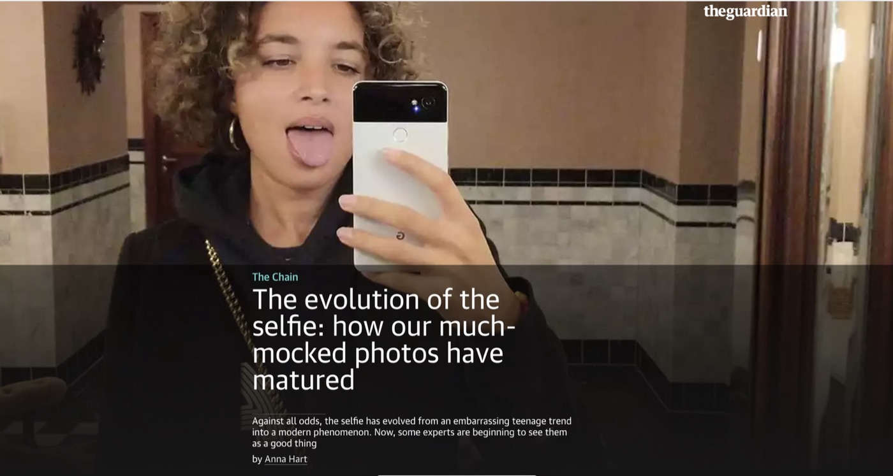
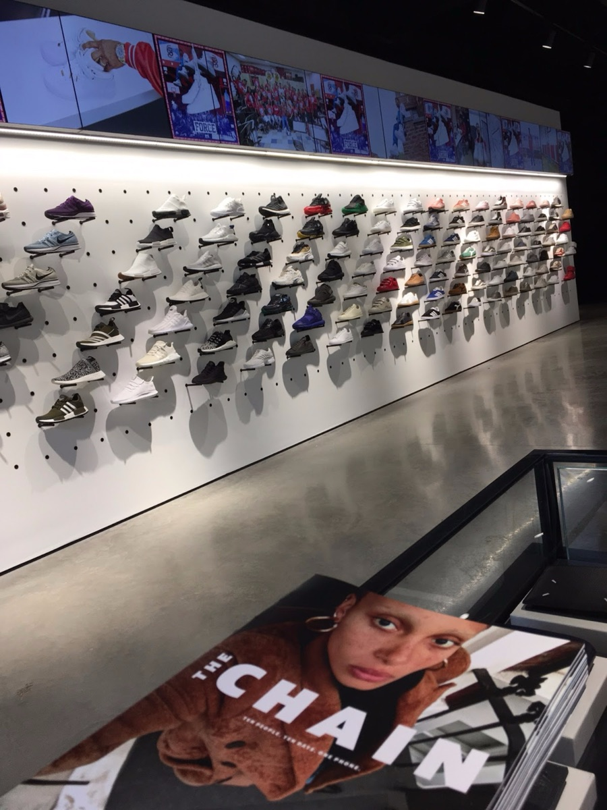

Pixel launch
Directed global paid strategy across six markets. Pixel reached 50%+ brand awareness in its first year.
The Chain: 10 people, 10 days, 1 phone. A partnership between Google Pixel 2 and The Guardian documenting the people and perspectives changing the UK fashion industry.

Google Pixel 2 was new to a crowded UK market, and its camera was the reason to buy it. Style-conscious buyers don't take a brand's word for camera quality. They follow what tastemakers make.
In fashion, credibility comes from the people who make it. So we put one Google Pixel 2 in the hands of the people changing the industry, and let their work prove the camera.


The Chain lifted purchase intent for Google Pixel 2 by 40%. Industry coverage included PSFK and Campaign.
Launches, partnerships and innovation work from 2014 to 2019.
Directed global paid strategy across six markets. Pixel reached 50%+ brand awareness in its first year.
Reddit's first-ever brand partnership. A video series cast by Reddit's communities, featuring Steve Wozniak, Casey Neistat and Robert Herjavec.
Made Google Home part of America's favorite home. Best of branded content in AdWeek's Media Plan of the Year.
The world's largest photo booth, built for the Berlin Festival of Lights. Covered by Digital Trends, Campaign and the BBC.
Turned the Barclays Center into a giant living room to show how Chromecast sends your phone to your TV.
One-of-a-kind boxes with every Google hardware product, sent to leading YouTube creators to launch the Google Store.
5 artists, 5 cities, 5 causes, livestreamed and shot with Pixel's low-light photography.
Jay Chiat Strategy Awards and Festival of Media honors. Featured by the BBC, USA Today, TechCrunch and Business Insider.